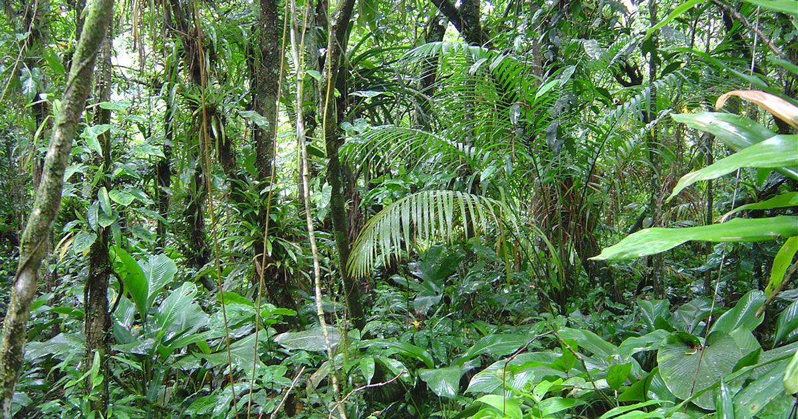
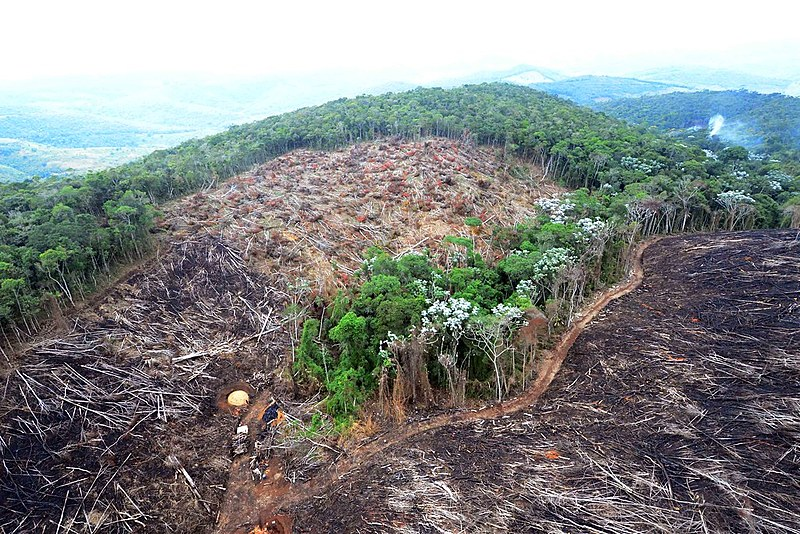

Flora
Mata Atlântica perdeu 11,5% de vegetação nativa em 40 anos, diz estudo
Levantamento do MapBiomas apontou que o número corresponde a 2,4 milhões de hectares de florestas entre 1985 e 2024
Saiba maisFauna
Entenda como a perda da floresta afetaria cidades, animais e os recursos naturais do país.
10/05/2026

Hoje em dia, desmata-se a floresta com a justificativa da necessidade de ocupação para o desenvolvimento humano, como a construção de cidades, a criação de gado e o avanço das plantações. Realmente, todos esses fatores possuem relevância para a sobrevivência humana, mas as florestas também não são essenciais para essa sobrevivência? Caso fosse necessário destruir toda a Mata Atlântica, suas florestas e seus animais para dar prioridade às “outras” necessidades humanas, como seria o Brasil?
O primeiro impacto sentido seria na água potável, já que a Mata Atlântica ajuda a proteger nascentes, rios e lençóis freáticos. Sem ela, a população enfrentaria grandes dificuldades no acesso à água limpa. Além disso, ocorreriam crises hídricas ainda mais severas, pois a floresta é responsável por regular a umidade do ar e o ciclo das chuvas. A qualidade da água também seria profundamente afetada, já que não existiriam árvores para proteger o solo e evitar assoreamentos nos rios.
E, quando as raras chuvas finalmente chegassem, os riscos de desastres naturais seriam muito maiores. Sem as raízes das árvores para segurar o solo e absorver a água da chuva, enchentes, erosões e deslizamentos aconteceriam com frequência alarmante, destruindo cidades e colocando milhares de vidas em risco.
Como consequência direta desse desequilíbrio ambiental, haveria um aumento extremo das temperaturas, afetando o equilíbrio climático em todo o país. Esse impacto atingiria diretamente um dos pilares da economia brasileira: a agricultura. Com solos menos férteis, escassez de água e mudanças climáticas severas, plantações seriam prejudicadas, causando aumento no preço dos alimentos, crises econômicas e insegurança alimentar para grande parte da população.
Além disso, sem recursos naturais suficientes para sustentar a vida e o consumo humano, a sociedade passaria a depender cada vez mais de recursos artificiais e industrializados. Isso resultaria em uma redução drástica da qualidade de vida, tornando o país mais poluído, mais quente e ambientalmente mais frágil.
Diversas espécies seriam extintas, já que muitas existem apenas na Mata Atlântica, como o mico-leão-dourado. Entretanto, a perda não seria apenas ambiental. Grande parte da cultura brasileira também seria afetada, principalmente as tradições indígenas, que possuem uma forte ligação espiritual e cultural com a floresta. Conhecimentos ancestrais sobre plantas medicinais, respeito à natureza e formas mais equilibradas de viver poderiam desaparecer junto com o bioma.
Mais do que perder árvores, o Brasil perderia parte de sua identidade. A Mata Atlântica não representa apenas um conjunto de florestas, mas um sistema que sustenta vidas, culturas, histórias e o próprio equilíbrio do país. Pensar em um Brasil sem Mata Atlântica é imaginar um futuro mais seco, mais quente, menos diverso e muito mais distante da natureza que ajudou a construir a história brasileira.


Flora
Levantamento do MapBiomas apontou que o número corresponde a 2,4 milhões de hectares de florestas entre 1985 e 2024
Saiba maisFlora
Estudo da Fundação SOS Mata Atlântica revela que menos de 13 milhões de hectares do bioma estão protegidos por unidades de conservação
Saiba maisFlora
Área total desmatada caiu 14% em 2024, mas perda das matas maduras – com maior biodiversidade e estoque de carbono – teve redução de apenas 2%
Saiba mais